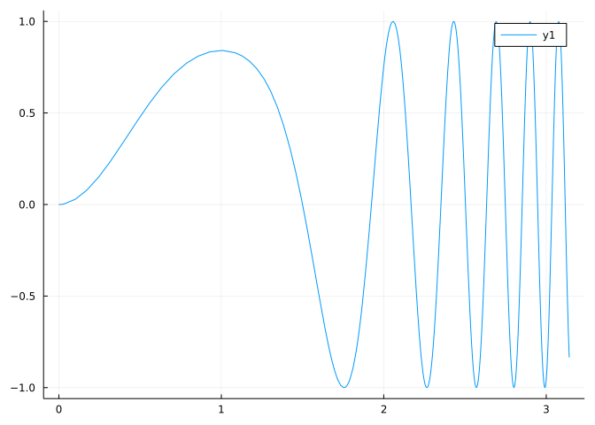
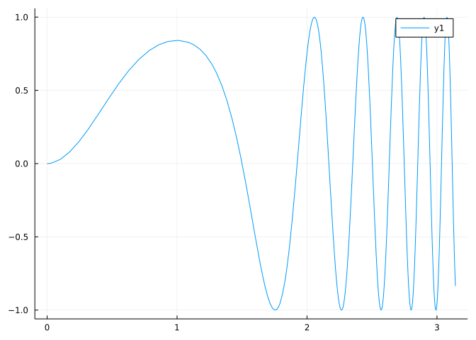
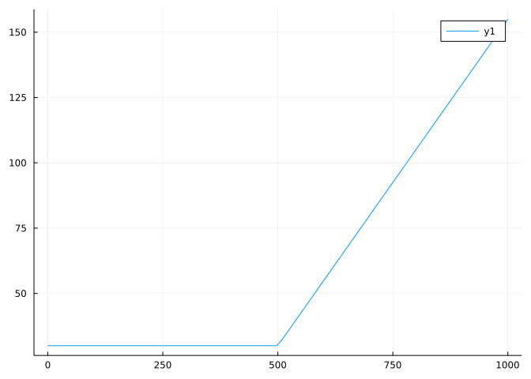
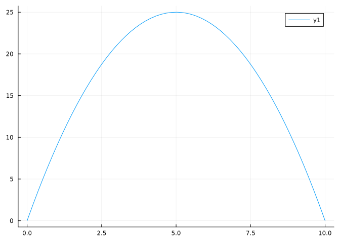

f(x) = sin(3x^2 - 2x^3)
plot(f, 0, pi)
A notebook for this material: ipynb (Pluto html) (With commentary)
We see in this section how to easily create functions in Julia. In the following sections we begin to do things with function, such as learning how to graph functions with Julia.
For basic things creating a new function and plotting it is as familiar as this:
We begin by loading some packages:
using MTH229
using PlotsThen we define a function and plot it:
f(x) = sin(3x^2 - 2x^3)
plot(f, 0, pi)
Really, you’d be hard pressed to make this any shorter or more familiar. Of course, not everything is this easy so there are still things to learn, but keep in mind that 90% of what we want to do in these projects is really this straightforward.
Mathematically, a function can be viewed in many different ways. An abstract means is to think of a function as a mapping, assigning to each \(x\) value in the function’s domain, a corresponding \(y\) value in the function’s range. With computer languages, such as Julia, the same holds, though there may be more than one argument to the function and with Julia the number of arguments and type of each argument are consulted to see exactly which function is to be called.
Here we don’t work abstractly though. For a mathematical function (real-valued function of a single variable, \(f: \mathbb{R} \rightarrow \mathbb{R}\)), we typically just have some rule for what the function will do to \(x\) to produce \(y\), such as
\[ f(x) = \sin(x) - \cos(x). \]
In Julia there are a few different ways to define a function, we start with the most natural one which makes it very simple to work with such functions.
Real-valued functions (\(f: \mathbb{R} \rightarrow \mathbb{R}\)) are often described in terms of elementary types of functions such as polynomial, trigonometric, or exponential. We give examples of each in the following.
Of course Julia has readily available all the usual built-in functions found on a scientific calculator, and many more. See the section on mathematical operations and functions of the official Julia documentation. In the following, we show how to translate some basic math functions into Julia functions:
\[ f(x) = \cos(x) - \sin^2(x) \]
becomes
f(x) = cos(x) - sin(x)^2f (generic function with 1 method)The conversion from the commonly written form (\(\sin^2(x)\)) to the far less ambiguous \(\sin(x)^2\) is very important. This is necessary with Julia – as it is with calculators – as there is no function sin^2. In Julia, squaring is done on values – not functions, like sin. (And most likely squaring of a function is more likely to be composition, which is not the usage here.) So, to have success, learn to drop the notations \(\sin^2(x)\) or for the arc sine function \(\sin^{-1}(x)\). These shortcuts are best left in the age when mathematics was done just on paper.
If you want to work in degrees you can do so with the degree-based trigonometric functions, which follow the same naming pattern save a trailing “d”:
fd(x) = cosd(x) - sind(x)^2fd (generic function with 1 method)A mathematical definition like
\[ f(x) = 2\tan^{-1}\left(\frac{\sqrt{1 - x^2}}{1 + x}\right) \]
becomes
f(x) = 2atan( sqrt(1-x^2) / (1 + x) )f (generic function with 1 method)This particular function is just an alternative expression for the arc cosine (mathematically \(\cos^{-1}\) but in Julia acos) using the arctan function, as seen here:
f(.5) - acos(.5) ## nearly 0-2.220446049250313e-16The exponent in the inverse trigonometric functions is just mathematical notation for the longer expression “arctan” or “arccos”. (It definitely is not a reciprocal.) The Julia functions – like most all computer languages – abbreviate these names to atan, acos or asin.
The math function
\[ f(x) = e^{-\frac{1}{2}x^2} \]
Can be expressed as
f(x) = e^(-(1/2)*x^2)f (generic function with 1 method)The value of \(e\) is built-in to Julia, but not immediately available. It is s exposed by the MTH229 package. But \(e\) can be inadvertently redefined. As such, it is a safer practice to use the exp function, as in:
f(x) = exp(-(1/2)*x^2)f (generic function with 1 method)There isn’t much difference in use, but don’t try to do both at once, as in exp^(-(1/2)*x^2)!
The mathematical notations for logarithms often include \(\ln\) and \(\log\) for natural log and log base 10. With computers, there is typically just log for natural log, or with an extra argument the logarithm to other bases.
\[ f(x) = \ln(1 - x) \]
becomes just
f(x) = log(1 - x)f (generic function with 1 method)Whereas, the base 10 log:
\[ f(x) = \log_{10}(1 + x) \]
can be done through:
f(x) = log(10, 1 + x)f (generic function with 1 method)where the first argument expresses the base. For convenience, Julia also gives the functions log10 and log2 for base 10 and 2 respectively.
In mathematics a typical observation is to recognize some object as a combination of simpler objects. For functions, we think of combining simpler functions into more complicated ones. For example, we can think of the sum of functions, \(h(x) = f(x) + g(x)\). The rule for each \(x\) is simply to add the results of the two rules for \(f\) and \(g\) applied to \(x\). Notationally, we might write this as either:
\[ h = f + g \]
or
\[ h(x) = f(x) + g(x). \]
The former treats \(f\) and \(g\) as function objects, the latter ties more closely to the concept of a function as a rule that operates on \(x\).
With Julia the latter representation is more useful for defining combinations of functions. For example, if \(f(x) = \sin(x)\) and \(g(x) = x^2\), then we can combine these in several ways. The following illustrates several ways to combine the two functions \(f\) and \(g\):
f(x) = sin(x)
g(x) = x^2
h(x) = f(x) + g(x) # f + g
h(x) = f(x) - g(x) # f - g
h(x) = f(x) * g(x) # f * g
h(x) = f(x) / g(x) # f / g
h(x) = f(x)^g(x) # f^gh (generic function with 1 method)All these are based on underlying mathematical operators. In addition, for functions there is the operation of composition, where the output of one function is the input to another. For example:
h(x) = f(g(x)) # f ∘ g or sin(x^2)
h(x) = g(f(x)) # g ∘ f or (sin(x))^2h (generic function with 1 method)This operation is fundamentally non-commutative, as the above example illustrates.
Which of these functions will compute \(\sin^3(x^2)\)?
Which of these functions will compute
\[ \frac{1}{\sqrt{2\pi}} e^{-\frac{1}{2}x^2}? \]
Define the function \(f(x) = -16x^2 + 100\).
Is \(f(4)\) positive?
Define the function \(f(x) = x^3 - 3x + 2\)
What is the value of \(f(10)\)?
Define the function \(f(x) = x^5 + x^4 + x^3\)
What is the value of \(f(2)\)?
Which of these functions will compute \(f(x) = x^2 -2x + 1\)?
Which of these functions will compute
\[ f(x) = \frac{x^2 - 2x}{x^2 - 3x}? \]
Which of these functions will compute
\[ f(x) = e^{-x} \sin(x)? \]
If you want to define a more complicated function, say one with a few steps to compute, an alternate form for defining a function can be used:
function function_name(function_arguments)
...function_body...
endThe last value computed is returned unless the function_body contains a return call.
For example, the following is a more verbose way to define \(f(x) = x^2\):
function f(x)
return(x^2)
endf (generic function with 1 method)The line return(x^2), could have just been x^2 as it is the last (and) only line evaluated.
Imagine we have a complicated function, such as:
\[ g(x) = \tan(\theta) x + \frac{32}{200 \cos\theta} x - 32 \log\left(\frac{200 \cos\theta}{200\cos\theta - x}\right). \]
where \(k\) is the constant 1/2 and \(\theta=\pi/4\). To avoid errors in transcribing, it can be be useful to break such definitions up into steps. Here we note the repeated use of \(200\cos(\theta)\) in the defintion of \(g(x)\), so we give that value the intermediate name of a
function g(x)
theta = pi/4
a = 200*cos(theta)
tan(theta)*x + (32/a)*x - 32*log(a/(a-x))
endg (generic function with 1 method)From this, we can easily see that we would need to be concerned as \(x\) approaches the value of a, as when \(x \geq a\) the logarithm won’t be defined.
Here is a different example, where we define a “hockey stick” function, a name for functions that are flat then increase linearly after some threshold.
An old-school cell-phone plan might cost $30 for the first 500 minutes of calling and 25 cents per minute thereafter. Represent this as a function of the number of minutes used.
Here we need to do one of two things depending if \(x\) is greater or less than \(500\). There are different ways to do this, here we use an if-else-end statement, which takes the following form:
function cell_phone(x)
if x < 500
return(30.0)
else
return(30.0 + 0.25*(x-500))
end
endcell_phone (generic function with 1 method)To see what it would cost to talk for 720 minutes in a month, we have:
cell_phone(720)85.0We return 30.0 above – and not the integer 30 – when \(x<500\) so that the function always returns a floating point value and not an integer if less than 0 and a floating point value if bigger. In general it is a good programming practice to have functions return only one type of variable for a given type of input. In this case, as the answer could be real-valued – and not just integer-valued, we want to return floating point values.
A quick plot will show why the above function is called a “hockey stick” function:
plot(cell_phone, 0, 1000)
When functions that have different rules based on the specific value of \(x\) that is input, the use “cases” notation is common. For example,
\[ f(x) = \begin{cases} \cos(x) & x \geq 0\\ 1 - e^{-1/x^2} & \text{otherwise}. \end{cases} \]
Translating this notation to Julia can also be done with the if-else-end construct:
function f(x)
if x >= 0
cos(x)
else
1 - exp(-1/x^2)
end
endf (generic function with 1 method)The expression after if is a Boolean value (a true or false value). In these examples they are generated through the Boolean operators, which include the familiar comparison symbols <, <=, ==, >=, and >. (Only == takes learning, as double equal signs are used for comparison, a single one is for assignment.)
One can use the so-called ternary operator a ? b : c for simple if-else-end statements as above.
Basically, a ? b : c is the same as the more verbose
if a
b
else
c
endSo the cell-phone example could have been a one-liner:
cell_phone(x) = x < 500 ? 30.0 : 30.0 + 0.25*(x - 500)cell_phone (generic function with 1 method)When x < 500 the expression right after ? is evaluated, and if not, the expression after : is.
For mathematical functions, the directness of the ternary operator usually makes it a preferred choice over if-else-end.
It can be convenient to nest ternary operators. In particular, when the cases involve have more than 2 possibilities. The following does something depending on whether x is positive, negative or zero:
heaviside(x) = x > 0 ? 1.0 : x == 0.0 ? 0.0 : -1.0heaviside (generic function with 1 method)That is a mess to read, but easy to write. It can be made a bit clearer by using parentheses around the case where x is not greater than 0:
heaviside(x) = x > 0 ? 1.0 : (x == 0.0 ? 0.0 : -1.0)heaviside (generic function with 1 method)Similarly, new lines can clear up the flow:
heaviside(x) = x > 0 ? 1.0 :
x == 0.0 ? 0.0 :
-1.0heaviside (generic function with 1 method)Which of these definitions will be the equivalent of \(f(x) = |x|\)? (The abs function is already one):
The sign function returns \(-1\) for negative numbers \(1\) for positive numbers and \(0\) for 0. Which of these functions could do the same?
T-Mobile has a pay as you go cell phone plan with the following terms:
Which of these functions will model this?
The concept of a function is of much more general use than its restriction to mathematical functions of single real variable. A natural application comes from describing basic properties of geometric objects. The following function definitions likely will cause no great concern when skimmed over:
Area(w, h) = w * h # of a rectangle
Volume(r, h) = pi * r^2 * h # of a cylinder
SurfaceArea(r, h) = pi * r * (r + sqrt(h^2 + r^2)) # of a right circular coneSurfaceArea (generic function with 1 method)The right-hand sides may or may not be familiar, but it should be reasonable to believe that if push came to shove, they could be looked up. However, the left-hand sides are subtly different – they have two arguments, not one. In Julia it is trivial to define functions with multiple arguments – we just did.
Earlier we saw the log function can use a second argument to express the base. This function is defined by log(b, x) = log(x) / log(b). The log(x) value is the natural log, and this definition just uses the change-of-base formula for logarithms.
But not so fast, on the left side is a function with two arguments and on the right side the functions have one argument – yet they share the same name. How does Julia know which to use? Julia uses the number, order, and type of the arguments passed to a function to determine which function definition to use. This is technically known as multiple dispatch or polymorphism. As a feature of the language, it can be used to greatly simplify the number of functions the user must learn. The basic idea is that many functions are “generic” in that they will work for many different scenarios. For example addition. It is defined for real numbers, integers, complex numbers, … . Each definition may be different, but to the end user only the operator + need be used. The rest happens behind the scenes. As an example, to see how many different definitions (“methods”) are defined in the base Julia language for the log operator, we can execute:
methods(log)There are many, and likely more to be added as the language matures.
Julia’s multiple dispatch allows multiple functions with the same name. The function that gets selected depends on the arguments given to the function. We can exploit this to simplify our tasks. For example, consider this optimization problem:
For all rectangles of perimeter 20, what is the one with largest area?
The start of this problem is to represent the area in terms of one variable. We see next that composition can simplify this task, which when done by hand requires a certain amount of algebra.
Representing the area of a rectangle in terms of two variables is easy:
Area(w, h) = w * hArea (generic function with 1 method)But the other fact about this problem – that the perimeter is 20 – means that height depends on width. For this question, we can see that \(P=2w + 2h\) so that
h(w) = (20 - 2*w)/2h (generic function with 1 method)By hand we would substitute this last expression into that for the area (to get \(A=w\cdot (20-2 \cdot w)/2 = -w^2 + 10\)) and simplify. However, within Julia we can let composition do the substitution and leave algebraic simplification for Julia to do:
Area(w) = Area(w, h(w))Area (generic function with 2 methods)This might seem odd, as now we have two different but related functions named Area. Julia will decide which to use based on the number of arguments when the function is called. This allows both to be used on the same line, as above. This usage is not common with computer languages, but is a feature of Julia which is built around the concept of generic functions with multiple dispatch rules to decide which rule to call.
For example, the plot function expects functions of a single numeric variable. Behind the scenes, then the function A(w) will be used in this graph:
plot(Area, 0, 10)
From this, we can see that that the width yielding the maximum area is \(w=5\), and so \(h=5\) as well.
Parameters and function arguments are easily confused. We will use keywords for our parameters. Keywords also allow us to specify a default value. Using a keyword is as simple as specifying the desired argument with key=value.
A simple case is a function which computes the \(y\) value on a line \(y=mx+b\) from a given \(x\) value. Here \(m\) and \(b\) are parameters. We will give them a default of \(1\) and \(0\):
mxplusb(x; m=1, b=0) = m*x + bmxplusb (generic function with 1 method)The syntax is to use a semicolon to separate regular arguments from those with keywords. This is not needed when calling the function:
mxplusb(2) ## 1*2 + 0, using defaults
mxplusb(2, m=2, b=3) ## 2*2 + 3, using passed in values7For a more complicated example, we revisit this function
\[ g(x) = \tan(\theta) x + \frac{32}{200 \cos\theta} x - 32 \log\left(\frac{200 \cos\theta}{200\cos\theta - x}\right). \]
Rather than define the value of and \(\theta\) outside the function, we can pass in the value for this parameter in this definition
function g(x; theta=pi/4)
a = 200*cos(theta)
tan(theta)*x + (32/a)*x - 32*log(a/(a-x))
endg (generic function with 1 method)The default means g(50, theta=pi/4) would be the same as
g(50)47.35323911536457The parameter make it easy to look at other types of problems. For example, if the angle were less, would the value of \(f\) be smaller or larger?
g(50, theta=pi/8) ## smaller in this case.19.272845247997708Passing in parameters has the big advantage of explicitly showing how Julia will find variables used within a function, as otherwise you need to have an understanding of the scoping rules in place. (Scoping rules determine where variables that are not passed in as arguments are found when referred to within a function.)
A common pattern in the Julia ecosystem is to use two positional arguments to pass in the function value(s) and the parameter(s) (through f(x, p)). A container is typically used for each, but in this example we pass in x as a number, and use a named tuple container to pass the parameters. The unpacking of parameters can be done in different ways, here we just access the named fields using Julia’s access notation (e.g. p.b gets the value named b from the tuple):
function mxplusb(x, p)
m, b = p.m, p.b
m * x + b
end
p = (m=2, b=1)
mxplusb(10, p) # computes 2*10 + 121Which of these function definitions corresponds to shifting the function f to the right by c units and up by d units with a default of \(0\) and \(0\):
Which of these definitions will lengthen the period of a periodic function \(f\) by a factor of \(c\), with a default of \(1\)?
The following transform of a function is at the core of wavelet theory:
g(t; a=1, b=0) = (1/sqrt(a)) * f((t - b)/a)g (generic function with 1 method)If \(f(x) = \sin(x)/x\) and \(a=2\) and \(b=1\) compute \(g(0, a=2, b=1)\).
Let \(g\) be defined by:
function g(x; theta=pi/4)
a = 200*cos(theta)
tan(theta)*x + (32/a)*x + 32*log((a-x)/a)
endg (generic function with 1 method)For x in 20, 25, 30, 35, 40, 45 degrees, what value will maximize g(125, theta=x*pi/180)?
A common mathematical notation for a function that emphasizes the fact that \(f\) maps \(x\) to some value \(y\) involving the rule of \(f\) is to use an arrow as:
\[ x \rightarrow -16x^2 + 32x \]
You can do the exact thing in Julia to create a function:
x -> -16x^2 + 32x#19 (generic function with 1 method)This expression creates a function object, but since we didn’t bind it to a variable (that is, we didn’t give the function a name) it will be immediately forgotten. Such functions without a name are known as anonymous functions.
Anonymous functions are very useful when working with functions defined by parameters as they can fix values of a parameter.
f(x, p) = cos(x) - x/p
fn = x -> f(x, 2) # fn fixes p=2 (a "closure")#21 (generic function with 1 method)In calculus an operator is some operation that takes a function and produces a different, but related function. Calculus has two main operators: the derivative and the integral, as will be discussed elsewhere.
In Julia it is natural to use functions which mirror mathematical operators: functions which accept other functions as inputs and can output a function. In computer science terminology, Julia treats functions like first class objects.
The plot function has been previously used to illustrate some examples. The basic syntax for this call is plot(f, a, b). This fits into a more general template: verb(function_object, arguments....). Other upcoming examples are a “verb” for finding derivatives and a “verb” for finding integrals.
Let’s look at a concrete example, where it is natural to both pass in a function and return a function.
In a precalculus course, we learn about transformations of functions where we relate the function \(g(x) = d + af(c(x-b))\) to the function \(f(x)\) in terms of the parameters \(a\), \(b\), \(c\), and \(d\). Here we focus on \(d\) and \(b\) which shift up and right.
Let’s make a function that takes \(f\), some specifications, and returns \(g\):
function tform(f; shift_up=0, shift_right=0)
x -> shift_up + f(x - shift_right)
endtform (generic function with 1 method)This basically is \(g(x) = d + f(x-b)\), but with longer names. This function takes as its main argument a function (f) and returns a function. (The “arrow” in the last line is defining an anonymous function for returning.)
Here we look at \(1/(x-2)\) evaluated at \(3\):
f(x) = 1/x
tf(x) = tform(f, shift_right=2)(x) ## returns a function
tf(3)1.0We can use the output of tform directly in a function call, or make a specific version of the function, as above, by defining it for certain values of its parameters.
What anonymous function will create \(\sin(x^2)\)?
What anonymous function of \(x\) will return the polynomial \(x^2 - 2x\):
What does this operator do?
function secant(f, a, b)
m = (f(b) - f(a)) / (b-a)
x -> f(a) - m * (x - a)
endsecant (generic function with 1 method)What does this function do?
function mystery(f)
x -> -f(x)
endmystery (generic function with 1 method)This section presents some additional details on writing functions in Julia that are here for informational purposes only.
As mentioned, the value returned by a function is either the last value executed or any value returned by return. For a typical real valued function \(f\) this is usually just a number. Sometimes it is convenient to return more than one value. For this a tuple proves useful:
A tuple is a container for holding different objects at once. They are made quite simply by enclosing the values in parentheses:
(1, "one")(1, "one")Tuples have many uses, but here we want to focus on their use as return values. Here is a somewhat contrived example. Imagine you write a function to compute the value of \(f(x) = x^x\), but you want to ensure \(x\) is positive, as otherwise there will be an error. You can do this, where we return a value of NaN and a message when the user tries to use a negative number:
f(x) = x > 0 ? (x^x, "") : (NaN, "You can't use non-positive numbers")f (generic function with 2 methods)We include a message even when the value of \(x\) is okay, as it is good practice –though not a requirement of Julia – to always return the same type of object, regardless the input.
A simple call would be:
f(-1)(NaN, "You can't use non-positive numbers")We get a tuple back. Julia makes working with tuple return values very easy. We can destructure them by simply placing two variable names on the left-hand side:
a, msg = f(-1) # alternatively: (a, b) = f(-1)(NaN, "You can't use non-positive numbers")A less artificial example will be discussed later: the quadgk function which estimates the value of an integral. For this computation both the value and an estimated maximum error are of interest, so both are returned as a tuple.
Typical functions here are real-valued functions of a single variable. The easiest way to use these is to just mimic the regular mathematical notation as much as possible. However, there are times where we want to be specific about what possible values a user can place into a function. For example, a naive function to compute the binomial coefficients,
\[ { n \choose k } = \frac{n!}{(n-k)! k!}, \]
can be specialized to just integer values with:
binom(n::Integer, k::Integer) = factorial(n)/(factorial(n-k) * factorial(k))binom (generic function with 1 method)The extra bit ::Integer specializes n and k so that this function only is called with both n and k are of this type.
Then we can call our binom function as:
binom(10,4)210.0But not as follows, as \(\pi\) is not an integer:
binom(10, pi)LoadError: MethodError: no method matching binom(::Int64, ::Irrational{:π})
[0mClosest candidates are:
[0m binom(::Integer, [91m::Integer[39m) at In[78]:1(The actual binomial function is much better than this, as it doesn’t divide a big number by a big number, which can cause real issues with loss of precision, though it does specialize to integers, and any sub-type. It also always returns an integer, whereas ours returns a floating-point value.)
Types in Julia are a more complicated matter than we want to get into here, but we do want to list the common types useful for basic calculus: Function, Real, Integer, Rational, Complex, and Number (real or complex).
Clearly the latter ones should nest, in that an object of type Integer should also be of type Real. This means when we specialize a mathematical function, it is enough to specify values of Real.
In Julia there are really two types of functions: generic functions and anonymous functions. A generic function is created when we use this form to create a function:
g1(x) = sin(3x^2 - 2x^3)g1 (generic function with 1 method)An anonymous function is made when we do something like
g2 = x -> sin(3x^2 - 2x^3)#30 (generic function with 1 method)For the most part the end user can’t tell the difference:
(g1(1), g2(1))(0.8414709848078965, 0.8414709848078965)But, there are times when there can be a conflict, in particular when you try to redefine a generic function as an anonymous function:
g1 = x -> sin(2x^2)LoadError: invalid redefinition of constant g1Or vice versa. Basically, Julia has assigned a certain function type to that name and you can’t change that type though you can change the function’s definition. (This is one exception to the “dynamic” aspect of Julia.)
We use the generic function approach in these notes to define our named functions, as the basic notation so closely mirrors the standard math notation.